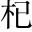
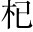
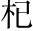

事有必至，理有固然引成語起。。惟天下之靜者，乃能見微而知著惟靜故能知幾，此先生自負之言也。○開端三句，言安石必亂天下，但靜以觀之自見，虛虛冒起全篇。。月暈運。而風，礎楚。潤而雨礎，柱下石也。月旁昏氣曰暈，柱礎生汗曰潤。，人人知之天地陰陽之事，人無不知。。人事之推移，理勢之相因，其疏闊而難知，變化而不可測者，孰與天地陰陽之事人事、理勢，較天地陰陽則為易知。？而賢者有不知歐陽公亦勸先生與荊公遊。，其故何也？好惡亂其中，而利害奪其外也常人尚能知天地陰陽之事，而賢者反不能知人事之推移、理勢之相因，蓋其心汩於好惡利害，而不能靜也。○此段申明起手三句意。。
昔者引證。，山巨源見王衍曰：「誤天下蒼生者，必此人也晉惠帝時，王衍為尚書令，樂廣為河南令，皆善清談。衍少時，山濤見之，嘆曰：「何物老嫗，生寧馨兒。然誤天下蒼生者，必此人也。」。」郭汾焚。陽見盧曰：「此人得志，吾子孫無遺類矣唐德宗以楊炎、盧。」自今而言之，其理固有可見者同平章事。。以吾觀之，王衍之為人，容貌言語，固有以欺世而盜名者，然不忮貌醜，有才辯，悅之。時郭子儀每見賓客，姬妾不離側。惟不求，與物浮沉至，子儀悉屏侍妾。或問其故，對曰：「。使晉無惠帝，僅得中主，雖衍百千，何從而亂天下乎貌醜而心險，婦人見之必笑。他日？盧之奸，固足以敗國，然而不學無文，容貌不足以動人，言語不足以眩世得志，吾族無遺類矣。」。非德宗之鄙暗，亦何從而用之理有固然。？由是言之，二公之料二子，亦容有未必然也至。。
今有人暗指安石。，口誦孔、老之言，身履夷、齊之行，收召好名之士、不得志之人，相與造作言語，私立名字，以為顏淵、孟軻復出有王衍之虛名。，而陰賊險狠，與人異趣有盧。是王衍、盧合而為一人也，其禍豈可勝之陰險。言哉升。？夫面垢不忘洗，衣垢不忘浣厥後卒生靖康之禍，直是目見，非為懸斷。，此人之至情也。今也不然，衣臣虜之衣，食犬彘之食，囚首喪面，而談詩書緩。，此豈其情也哉囚不櫛首。居喪者，不洗面。○明指安石。？凡事之不近人情者，鮮不為大奸慝，豎刁、易牙、開方是也從恆情勘出至奸，所謂見微知著者以此。。以蓋世之名，而濟其未形之患注見《管仲論》中。○拓開一步。，雖有願治之主，好賢之相，猶將舉而用之緊入本人。。則其為天下患，必然而無疑者，非特二子之比也規諷仁宗。。
孫子曰：「善用兵者，無赫赫之功不欲有功，恐致傷人也。。」使斯人而不用也，則吾言為過，而斯人有不遇之嘆，孰知禍之至於此哉？不然，天下將被其禍，而吾獲知言之名，悲夫寧願安石不見用，使天下以吾言為過，毋願安石用，使天下被其禍，而吾獲知言之名也。○結得淋漓感慨。！
介甫名始盛時，老蘇作《辨姦論》，譏其不近人情。厥後新法煩苛，流毒寰宇。見微知著，可為千古觀人之法。